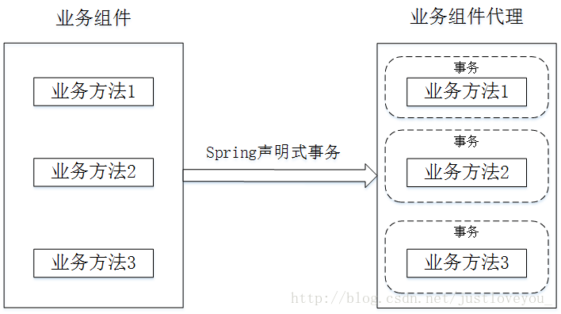

Adamall
Welcome to SamsarA’s Blog! If you get any problems when reading my blog, you can
ask me on Gitee.
Adamall
#SpringBoot #Redis #MybaticsYou can get source code on my Gitee.
前端安全
浏览器同源政策
同源政策是浏览器的一个安全政策
- 目的：是为了防止将用户信息恶意的盗取传输
- 同源含义：域名（IP），协议头， 端口三者相同
- MDN同源政策的内容：
- 通常允许跨域写操作 ：重定向以及表单提交。
- 通常允许跨域资源嵌入：script\link\img\video\iframe
- 不允许跨域读操作: ajax
1 | |
不允许跨域读操作， 那么就代表了有三种操作会受到同源政策的限制。
即不同源网站间的AJAX的请求，网站间的DOM操作，以及两者间的cookie和indexDB之间的访问。
即同源政策通过限制你获取当前用户记录在其他源下的cookie等
记录在浏览器端的用户数据，以及限制了使用AJAX发送数据到其他的源的方式，以此来保障安全。
CORS
- CORS - Cross Origin Resourse-Sharing - 跨站资源共享
由于浏览器的安全策略——同源政策，进行web开发经常会遇到跨域问题.
于是在XMLHttpRequest v2标准下，提出了CORS(Cross Origin Resourse-Sharing)的模型，试图提供安全方便的跨域读写资源。目前主流浏览器均支持CORS。
CORS定义了两种跨域请求，简单跨域请求和非简单跨域请求。
CORS 请求类型
- 简单跨域请求：
请求方法为HEAD，GET，POST;请求头只有4个字段，Accept，Accept-Language，Content-Language，Last-Event-ID;
如果设置了Content-Type，则其值只能是application/x-www-form-urlencoded,multipart/form-data,text/plain。
- 非简单请求:不满足简单跨域请求的请求;
CORS流程
浏览器对简单请求和非简单请求的处理机制不一样。
当我们需要发送一个跨域请求的时候，浏览器会首先检查这个请求，如果它符合上面所述的简单跨域请求，浏览器就会立刻发送这个请求。
如果浏览器检查之后发现这是一个非简单请求，比如请求头含有X-Forwarded-For字段。这时候浏览器不会马上发送这个请求，
而是有一个preflight，跟服务器验证的过程。如果预检通过，则发送这个请求，否则就不拒绝发送这个跨域请求。
浏览器和服务器的合作判定步骤如下：
浏览器先根据同源策略对前端页面和后台交互地址做匹配，若同源，则直接发送数据请求；若不同源，则发送跨域请求。
服务器解析程序收到浏览器跨域请求后，根据自身配置返回对应文件头。若未配置过任何允许跨域，则文件头里不包含Access-Control-Allow-origin字段，
若配置过域名，则返回Access-Control-Allow-origin+ 对应配置规则里的域名的方式。浏览器根据接受到的http文件头里的Access-Control-Allow-origin字段做匹配，若无该字段，说明不允许跨域；若有该字段，则对字段内容和当前域名做比对，
如果同源，则说明可以跨域，浏览器发送该请求；若不同源，则说明该域名不可跨域，不发送请求
CSRF
- CSRF - Cross-Site Request Forgery - 跨站请求伪造
同源政策通过限制你获取当前用户记录在其他源下的cookie等记录在浏览器端的用户数据，以及限制了使用AJAX发送数据到其他的源的方式，以此来保障安全。
csrf利用的是同源政策允许跨域表单提交，以及允许跨域请求资源完成的攻击。
CSRF攻击分类
CSRF漏洞一般分为站外和站内两种类型:
- CSRF站外类型
本质上就是传统意义上的外部提交数据问题。
通常程序员会考虑给一些留言或者评论的表单加上水印以防止SPAM问题（这里，SPAM可以简单的理解为垃圾留言、垃圾评论，或者是带有站外链接的恶意回复），
但是有时为了提高用户的体验性，可能没有对一些操作做任何限制，所以攻击者可以事先预测并设置请求的参数，
在站外的Web页面里编写脚本伪造文件请求，或者和自动提交的表单一起使用来实现GET、POST请求，
当用户在会话状态下点击链接访问站外Web页面，客户端就被强迫发起请求。
- CSRF站内类型的漏洞
在一定程度上是由于程序员滥用REQUEST类变量造成的。
在一些敏感的操作中（如修改密码、添加用户等），本来要求用户从表单提交发起POST请求传递参数给程序，但是由于使用了
_REQUEST等变量，程序除支持接收POST请求传递的参数外也支持接收GET请求传递的参数，这样就会为攻击者使用CSRF攻击创造条件。
一般攻击者只要把预测的请求参数放在站内一个贴子或者留言的图片链接里，受害者浏览了这样的页面就会被强迫发起这些请求。
CSRF原理
http传输是无状态的，即两个请求之前是完全无联系的，那么网站就会面临如何去识别一个用户的登录态的问题。
维持登录态一般的方式就是利用http头部的cookie存储一些信息，然后利用浏览器，访问一个域名下其他页面请求，浏览器会携带当前域下的cookie这一特性，在服务端进行识别。
cookie存储的用于识别的信息一般也会有两种： 一种是类似于JWT的，在用户登录后将用户的信息加密编码将得到的token塞到cookie里，然后验证就是通过解密检查是否存在某个字段，
另一种则是使用session，将sessionId塞到cookie里面。
用户的身份识别就是利用cookie，那么冒充用户身份的方式即利用访问一个域名下其他页面请求，浏览器会携带当前域下的cookie这一特性。
CSRF实现
常见的攻击类型：
- GET类型的CSRF
1 | |
GET类型的CSRF利用非常简单，只需要一个HTTP请求，在受害者访问特定的页面后，浏览器会自动向受害者已经登录并记录cookie的网站发出一次HTTP请求。
在用户不知情的情况下，目标网站就会收到一次跨域请求，因为浏览器自动携带cookie，因此得以伪装身份。
- POST类型的CSRF
1 | |
访问某页面后，该表单会自动提交，相当于模拟用户完成了一次POST操作。
POST类型的攻击通常比GET要求更加严格一点，但仍并不复杂。任何个人网站、博客，被黑客上传页面的网站都有可能是发起攻击的来源，后端接口不能将安全寄托在仅允许POST上面。
- 链接类型的CSRF
链接类型的CSRF并不常见，比起其他两种用户打开页面就中招的情况，这种需要用户点击链接才会触发。
这种类型通常是在论坛中发布的图片中嵌入恶意链接，或者以广告的形式诱导用户中招，攻击者通常会以比较夸张的词语诱骗用户点击，例如：
1 | |
由于之前用户登录了信任的网站A，并且保存登录状态，只要用户主动访问上面的这个PHP页面，则表示攻击成功。
事务管理
一般而言，用户的每次请求都对应一个业务逻辑方法，并且每个业务逻辑方法往往具有逻辑上的原子性。
此外，一个业务逻辑方法往往包括一系列数据库原子访问操作，并且这些数据库原子访问操作应该绑定成一个整体，即要么全部执行，要么全部不执行，通过这种方式我们可以保证数据库的完整性，这就是事务。
总的来说，事务是一个不可分割操作序列，也是数据库并发控制的基本单位，其执行的结果必须使数据库从一种一致性状态变到另一种一致性状态。
数据库事务
事务
某些业务要求，一系列操作必须全部执行，而不能仅执行一部分。例如，一个转账操作。
这两条SQL语句必须全部执行，或者，由于某些原因，如果第一条语句成功，第二条语句失败，就必须全部撤销。
1 | |
这种把多条语句作为一个整体进行操作的功能，被称为数据库事务。数据库事务可以确保该事务范围内的所有操作都可以全部成功或者全部失败。
如果事务失败，那么效果就和没有执行这些SQL一样，不会对数据库数据有任何改动。
数据库事务具有ACID这4个特性：
- A：Atomic，原子性，将所有SQL作为原子工作单元执行，要么全部执行，要么全部不执行；
- C：Consistent，一致性，事务完成后，所有数据的状态都是一致的，即A账户只要减去了100，B账户则必定加上了100；
- I：Isolation，隔离性，如果有多个事务并发执行，每个事务作出的修改必须与其他事务隔离；
- D：Duration，持久性，即事务完成后，对数据库数据的修改被持久化存储。
数据库系统有两种事务
隐式事务: 对于单条SQL语句，数据库系统自动将其作为一个事务执行.
显式事务: 手动把多条SQL语句作为一个事务执行，使用BEGIN开启一个事务，使用COMMIT提交一个事务.
1 | |
COMMIT是指提交事务，即试图把事务内的所有SQL所做的修改永久保存。如果COMMIT语句执行失败了，整个事务也会失败。
有些时候，我们希望主动让事务失败，这时，可以用ROLLBACK回滚事务，整个事务会失败：
1 | |
隔离级别
对于两个并发执行的事务，如果涉及到操作同一条记录的时候，可能会发生问题。因为并发操作会带来数据的不一致性，
数据库系统提供了隔离级别来让我们有针对性地选择事务的隔离级别，避免数据不一致的问题。
SQL标准定义了4种隔离级别，分别对应可能出现的数据不一致的情况：
严格程度由低到高：
1 | |
数据不一致
- 脏读：
读取未提交数据
A事务读取B事务尚未提交的数据，此时如果B事务发生错误并执行回滚操作，那么A事务读取到的数据就是脏数据。
- 不可重复读：
前后多次读取，数据内容不一致
事务A在执行读取操作，由整个事务A比较大，前后读取同一条数据需要经历很长的时间 。
而在事务A第一次读取数据，比如此时读取了小明的年龄为20岁，事务B执行更改操作，将小明的年龄更改为30岁，
此时事务A第二次读取到小明的年龄时，发现其年龄是30岁，和之前的数据不一样了，也就是数据不重复了
- 幻读：
前后多次读取，数据总量不一致
事务A在执行读取操作，需要两次统计数据的总量，前一次查询数据总量后，此时事务B执行了新增数据的操作并提交后，
这个时候事务A读取的数据总量和之前统计的不一样，就像产生了幻觉一样，平白无故的多了几条数据，成为幻读。
Spring事务
在使用传统的事务编程策略时，程序代码必然和具体的事务操作代码耦合
1 | |
使用Spring事务管理策略恰好可以避免这种尴尬。Spring的事务管理提供了两种方式：
编程式事务管理
Hibernate中，我们需要在代码中显式调用beginTransaction()、commit()、rollback()等事务管理相关的方法，
这就是编程式事务管理。通过 Spring 提供的事务管理 API，我们可以在代码中灵活控制事务的执行。在底层，Spring 仍然将事务操作委托给底层的持久化框架来执行。
声明式事务管理。
Spring 的声明式事务管理是建立在 Spring AOP 机制之上的，其本质是对目标方法前后进行拦截，
并在目标方法开始之前创建或者加入一个事务， 在执行完目标方法之后根据执行情况提交或者回滚事务。
声明式事务最大的优点就是不需要通过编程的方式管理事务，这样就不需要在业务逻辑代码中掺杂事务管理的代码，只需在配置文件中作相关的事务规则声明（或通过等价的基于标注的方式），便可以将事务规则应用到业务逻辑中。

总的来说，声明式事务得益于 Spring IoC容器 和 Spring AOP 机制的支持：IoC容器为声明式事务管理提供了基础设施，使得 Bean 对于 Spring 框架而言是可管理的；
而由于事务管理本身就是一个典型的横切逻辑（正是 AOP 的用武之地），因此 Spring AOP 机制是声明式事务管理的直接实现者。
显然，声明式事务管理要优于编程式事务管理，这正是spring倡导的非侵入式的开发方式。声明式事务管理使业务代码不受污染，一个普通的POJO对象，只要在XML文件中配置或者添加注解就可以获得完全的事务支持。